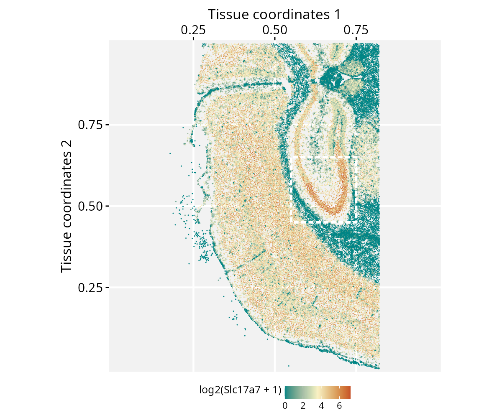
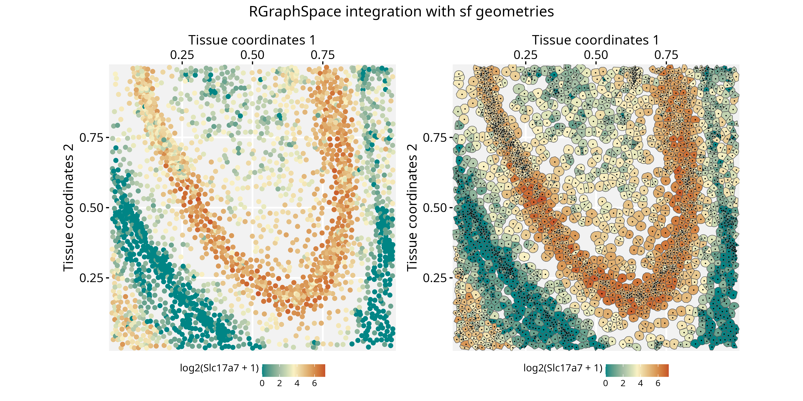

Spatial-segmented data with Seurat and RGraphSpace
Sysbiolab Team
2026-09-03
Source:vignettes/articles/spatial-segmentation1.Rmd
spatial-segmentation1.RmdPackage: RGraphSpace 1.5.3
Overview
This vignette demonstrates how RGraphSpace renders sf features using spatial-segmented data pre-processed with the Seurat package (Hao et al. 2024).
Before you start
This vignette assumes familiarity with Seurat (Hao et al. 2024), particularly for handling spatial transcriptomics data.
Note: If you are new to Seurat, we recommend reviewing its spatial segmentation tutorials before proceeding.
Computational requirement:
Hardware: Workstation with RAM >= 32 GB for large datasets
Software: R (>=4.5); RStudio recommended
Required packages
Before proceeding, ensure that all packages described in the Installation Instructions are installed.
# Check versions
if (packageVersion("RGraphSpace") < "1.5.2"){
message("Need to update 'RGraphSpace' for this vignette")
remotes::install_github("sysbiolab/RGraphSpace")
}
if (packageVersion("Seurat") < "5.5.1"){
message("Need to update 'Seurat' for this vignette")
remotes::install_github("satijalab/Seurat")
}Setting input data
# Load packages
library("RGraphSpace")
library("Seurat")
library("SeuratObject")
library("sf")
library("patchwork")Download the dataset
We will use a dataset provided by 10x Genomics to demonstrate their
Xenium
platform, consisting of spatial transcriptomics data from a fresh
frozen mouse brain. The repository provides a batch download option from
the terminal, using wget or curl; the
wget command is reproduced below.
The Xenium dataset can be downloaded from the 10x Genomics repository:
- Repository URL: https://www.10xgenomics.com/datasets
- Dataset: Fresh Frozen Mouse Brain for Xenium Explorer Demo
- Where to find it: Output and supplemental files
- Download: “Tiny subset”
- File: Xenium_V1_FF_Mouse_Brain_Coronal_Subset_CTX_HP_outs.zip
- MD5: a39fa6d0a751db1f206c915b6419e329
- Size: 3.48 GB
Loading the dataset
We load the Xenium dataset downloaded earlier, including its cell segmentation boundaries.
# Set path to data directory
localdir <- "path/to/data/directory"
# Load the Xenium data
xenium.obj <- LoadXenium(localdir, fov = "fov", segmentations = "cell")Seurat offers several downstream pre-processing steps at this stage,
such as SCTransform normalization and dimensionality
reduction. These are thoroughly documented in Seurat’s own tutorials, so
we do not repeat them here. This vignette focuses instead on using
RGraphSpace to manipulate and visualize the segmented data
directly, for which the raw data is sufficient.
## Optional: run the variance‐stabilizing transformation to use normalized data
# xenium.obj <- subset(xenium.obj, subset = nCount_Xenium > 0)
# xenium.obj <- SCTransform(xenium.obj, assay = "Xenium")Creating a GraphSpace object
Convert the Seurat object into a
GraphSpace.
# Coerce 'Seurat' to 'GraphSpace'
gs <- as.GraphSpace(xenium.obj, space = "spatial", layer = "counts")Extract the cell segmentation polygons from the Seurat
object as an sf geometry column, attach it to the nodes,
and normalize both the graph and the geometry together; since this
geometry is real, spatially meaningful data (not arbitrary shapes),
normalizeGeometry() is the right tool here, not
fitGeometry(). We also rotate and flip the result to match
the orientation used in Seurat’s own related vignette.
# If available, add geometry
Images(xenium.obj)
cellseg <- xenium.obj[["fov"]]
cellseg <- cellseg$segmentations@polygons
cellseg <- SpatialPolygons(cellseg)
cellseg <- sf::st_as_sfc(cellseg)
cellseg <- sf::st_make_valid(cellseg)
gs_geometry(gs) <- cellseg
# Normalize graph and geometry coordinates
gs <- normalizeGraphSpace(gs, mar = 0)
gs <- normalizeGeometry(gs)
# Rotate and flip to follow Seurat's related vignette
gs <- rotateGraphSpace(gs)
gs <- flipGraphSpace(gs)Spatial feature visualization
With the full tissue now laid out, plot gene expression across all cells, marking a region of interest to zoom into next.
# Set color palette and data range for use across plots
cpal <- hcl.colors(100, palette = "Geyser", rev = FALSE)
data_range <- range(log2(gs[["fdata"]] + 1))
# Main plot, expression counts of a feature (Slc17a7);
# a box marks a region of interest
p <- ggplot(gs) +
geom_nodespace(mapping = aes(colour = log2(Slc17a7 + 1)),
size = 0.4, pch = 16) +
scale_colour_continuous(palette = cpal, limits = data_range) +
theme_gspace_coords(theme = "th3", is_norm = TRUE,
xlab = "Tissue coordinates 1", ylab = "Tissue coordinates 2") +
annotate("rect", xmin = 0.55, xmax = 0.75, ymin = 0.45, ymax = 0.65,
fill = NA, colour = "white", lty = "21", lwd = 1)
p
Crop to the marked region. Cropping does not automatically re-align coordinates, so both the graph and the geometry need to be normalized again afterward.
# Crop the region of interest
gs_crop <- cropGraphSpace(gs, xmin = 0.55, xmax = 0.75, ymin = 0.45, ymax = 0.65)
# Re-normalize coordinates for cropping region
gs_crop <- normalizeGraphSpace(gs_crop, mar = 0)
gs_crop <- normalizeGeometry(gs_crop)
# Rotate and flip to follow the main plot orientation
gs_crop <- rotateGraphSpace(gs_crop)
gs_crop <- flipGraphSpace(gs_crop)Finally, compare the two representations side by side: nodes alone versus the real cell segmentation shapes, with node centroids overlaid for reference.
# Plot nodes, representing cells
p1 <- ggplot(gs_crop) +
geom_nodespace(mapping = aes(colour = log2(Slc17a7 + 1)),
size = 1.5, pch = 19) +
scale_colour_continuous(palette = cpal, limits = data_range) +
theme_gspace_coords(theme = "th3", is_norm = TRUE,
xlab = "Tissue coordinates 1",
ylab = "Tissue coordinates 2")
# Plot geometries, representing cells
p2 <- ggplot(gs_crop) +
geom_sf(mapping = aes(geometry = geometry, fill = log2(Slc17a7 + 1) )) +
scale_fill_continuous(palette = cpal, limits = data_range) +
geom_nodespace(colour = "black", size = 0.2, pch = 19) +
theme_gspace_coords(theme = "th3", is_norm = TRUE,
xlab = "Tissue coordinates 1",
ylab = "Tissue coordinates 2")
p1 + p2 +
patchwork::plot_annotation(
title = "RGraphSpace integration with sf geometries",
theme = theme(plot.title = element_text(hjust = 0.5)))
Session information
#> R version 4.6.1 (2026-06-24)
#> Platform: x86_64-pc-linux-gnu
#> Running under: Ubuntu 24.04.4 LTS
#>
#> Matrix products: default
#> BLAS: /usr/lib/x86_64-linux-gnu/openblas-pthread/libblas.so.3
#> LAPACK: /usr/lib/x86_64-linux-gnu/openblas-pthread/libopenblasp-r0.3.26.so; LAPACK version 3.12.0
#>
#> locale:
#> [1] LC_CTYPE=en_US.UTF-8 LC_NUMERIC=C
#> [3] LC_TIME=en_US.UTF-8 LC_COLLATE=en_US.UTF-8
#> [5] LC_MONETARY=en_US.UTF-8 LC_MESSAGES=en_US.UTF-8
#> [7] LC_PAPER=en_US.UTF-8 LC_NAME=C
#> [9] LC_ADDRESS=C LC_TELEPHONE=C
#> [11] LC_MEASUREMENT=en_US.UTF-8 LC_IDENTIFICATION=C
#>
#> time zone: America/Sao_Paulo
#> tzcode source: system (glibc)
#>
#> attached base packages:
#> [1] stats graphics grDevices utils datasets methods base
#>
#> other attached packages:
#> [1] patchwork_1.3.2 sf_1.1-1 Seurat_5.5.1.9001 SeuratObject_5.4.0
#> [5] sp_2.2-1 RGraphSpace_1.5.3 ggplot2_4.0.3
#>
#> loaded via a namespace (and not attached):
#> [1] RColorBrewer_1.1-3 rstudioapi_0.19.0 jsonlite_2.0.0
#> [4] magrittr_2.0.5 spatstat.utils_3.2-3 ggbeeswarm_0.7.3
#> [7] farver_2.1.2 rmarkdown_2.31 fs_2.1.0
#> [10] ragg_1.5.2 vctrs_0.7.3 ROCR_1.0-12
#> [13] spatstat.explore_3.8-1 terra_1.9-34 htmltools_0.5.9
#> [16] sass_0.4.10 sctransform_0.4.3 parallelly_1.47.0
#> [19] KernSmooth_2.23-27 bslib_0.11.0 htmlwidgets_1.6.4
#> [22] desc_1.4.3 ica_1.0-3 fontawesome_0.5.3
#> [25] plyr_1.8.9 plotly_4.12.0 zoo_1.8-15
#> [28] cachem_1.1.0 igraph_2.3.3 mime_0.13
#> [31] lifecycle_1.0.5 pkgconfig_2.0.3 Matrix_1.7-6
#> [34] R6_2.6.1 fastmap_1.2.0 fitdistrplus_1.2-6
#> [37] future_1.70.0 shiny_1.14.0 digest_0.6.39
#> [40] tensor_1.5.1 RSpectra_0.16-2 irlba_2.3.7
#> [43] textshaping_1.0.5 progressr_0.19.0 spatstat.sparse_3.2-0
#> [46] httr_1.4.8 polyclip_1.10-7 abind_1.4-8
#> [49] compiler_4.6.1 proxy_0.4-29 withr_3.0.3
#> [52] S7_0.2.2 DBI_1.3.0 fastDummies_1.7.6
#> [55] MASS_7.3-66 classInt_0.4-11 tools_4.6.1
#> [58] units_1.0-1 vipor_0.4.7 lmtest_0.9-40
#> [61] otel_0.2.0 beeswarm_0.4.0 httpuv_1.6.17
#> [64] future.apply_1.20.2 goftest_1.2-3 glue_1.8.1
#> [67] nlme_3.1-170 promises_1.5.0 grid_4.6.1
#> [70] Rtsne_0.17 cluster_2.1.8.2 reshape2_1.4.5
#> [73] generics_0.1.4 gtable_0.3.6 spatstat.data_3.1-9
#> [76] class_7.3-24 tidyr_1.3.2 data.table_1.18.4
#> [79] tidygraph_1.3.1 spatstat.geom_3.8-1 RcppAnnoy_0.0.23
#> [82] ggrepel_0.9.8 RANN_2.6.2 pillar_1.11.1
#> [85] stringr_1.6.0 spam_2.11-4 RcppHNSW_0.7.0
#> [88] later_1.4.8 splines_4.6.1 dplyr_1.2.1
#> [91] lattice_0.23-1 deldir_2.0-4 survival_3.8-9
#> [94] tidyselect_1.2.1 miniUI_0.1.2 pbapply_1.7-4
#> [97] knitr_1.51 gridExtra_2.3.1 scattermore_1.2
#> [100] xfun_0.59 matrixStats_1.5.0 stringi_1.8.9
#> [103] lazyeval_0.2.3 yaml_2.3.12 evaluate_1.0.5
#> [106] codetools_0.2-20 tibble_3.3.1 cli_3.6.6
#> [109] uwot_0.2.4 xtable_1.8-8 reticulate_1.46.0
#> [112] systemfonts_1.3.2 jquerylib_0.1.4 dichromat_2.0-1
#> [115] Rcpp_1.1.2 spatstat.random_3.5-0 globals_0.19.1
#> [118] png_0.1-9 ggrastr_1.0.2 spatstat.univar_3.2-0
#> [121] parallel_4.6.1 pkgdown_2.2.0 dotCall64_1.2
#> [124] listenv_1.0.0 viridisLite_0.4.3 scales_1.4.0
#> [127] e1071_1.7-17 ggridges_0.5.7 purrr_1.2.2
#> [130] rlang_1.3.0 cowplot_1.2.0